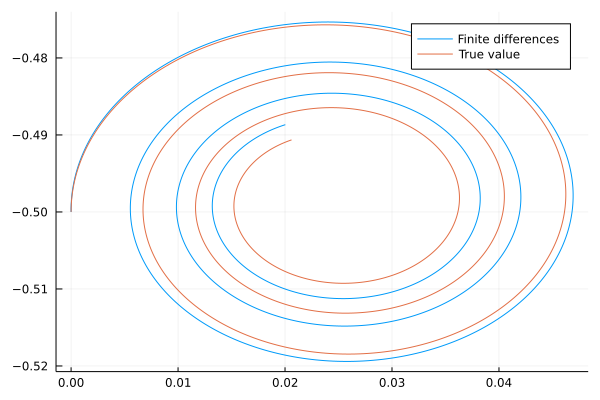
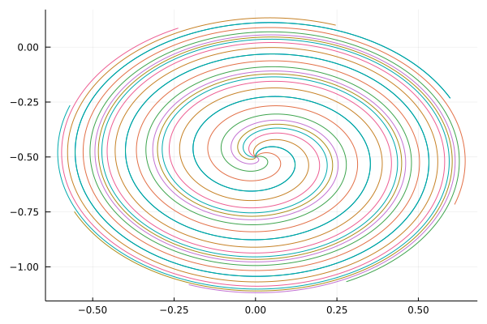
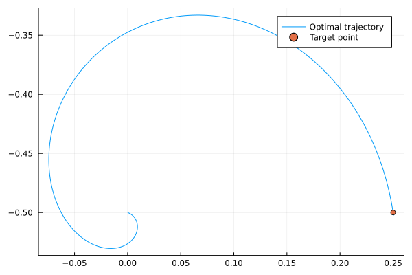

Optimal control
This section considers the optimal control, which combines ordinary differential equations with optimization. It was extensively studied many decades ago, when it was used to steer rockets in space.
Permanent magnet synchronous motors
We will consider the problem of optimal steering of a PMSM (permanent magnet synchronous motor), which appear in electrical drives. The motor can be described via a linear equation
\[\dot x(t) = Ax(t) + q(t) + Bu(t),\]
where $x(t)$ is the state, $q(t)$ is the bias and $u(t)$ is the control term. More specifically, we have
\[A = -\begin{pmatrix} \frac{R_1}{L_1} & 0 \\ 0 & \frac{R_2}{L_2} \end{pmatrix} - \omega \begin{pmatrix} 0 & -1 \\ 1 & 0 \end{pmatrix}, \qquad B = \begin{pmatrix} 1 & 0 \\ 0 & 1\end{pmatrix}, \qquad q(t) = \begin{pmatrix} \frac{R_1}{L_1}\psi_{\rm pm} \\ 0 \end{pmatrix},\]
where $R$ is the resistance, $L$ the inductance, $\psi$ the flux and $\omega$ the rotor speed. The state $x(t)$ are the currents in the $dq$ reference frame and the control $u(t)$ is the provided voltage. For simplicity we assume that the ratio of resistances and inductances is the same and that the bias is constant:
\[\rho := \frac{R_1}{L_1} = \frac{R_2}{L_2},\qquad q:=q(t)\]
The goal is to apply such voltage so that the system reaches the desired position $x_{\rm tar}$ from an initial position $x_0$ in minimal possible time. With maximal possible allowed voltage $U_{\rm max}$ this amounts to solving
\[\begin{aligned} \text{minimize}\qquad &\tau \\ \text{subject to}\qquad &\dot x(t) = Ax(t) + q + u(t), \qquad t\in[0,\tau], \\ &||u(t)||\le U_{\rm max},\qquad t\in[0,\tau], \\ &x(0) = x_0,\ x(\tau)=x_{\rm tar}. \end{aligned}\]
Discretizing the problem and solving it by means of non-linear programming would result in a large number of variables (their number would also be unknown due to the minimal time $\tau$) and is not feasible. Instead, we analyze the problem and try to simplify it.
Computing trajectories
From the theoretical part, we know that the optimal solution of the ODE equals to
\[\begin{aligned} x(t) &= e^{At}\left(x_0 + \int_0^t e^{-As}(q+u(s))ds\right) \\ &= e^{At}\left(x_0 + A^{-1}(I-e^{-At})q + \int_0^t e^{-As}u(s)ds\right). \end{aligned}\]
This term contains the matrix exponential $e^{At}$. To compute it, we may run exp(A). It is important to realize that matrix exponential is different from elementwise exponential exp.(A) (try it). We set up the parameters
ω = 2
ρ = 0.01
A = -ρ*[1 0; 0 1] -ω*[0 -1; 1 0]By computing the eigenvalues and eigenvectors
using LinearAlgebra
λ, V = eigen(A)LinearAlgebra.Eigen{Complex{Float64},Complex{Float64},Array{Complex{Float64},2},Array{Complex{Float64},1}}
values:
2-element Array{Complex{Float64},1}:
-0.01 - 2.0000000000000004im
-0.01 + 2.0000000000000004im
vectors:
2×2 Array{Complex{Float64},2}:
0.0+0.707107im 0.0-0.707107im
0.707107-0.0im 0.707107+0.0imwe can deduce that eigendecomposition
\[A = \frac 12\begin{pmatrix} i & -i \\ 1 & 1 \end{pmatrix} \begin{pmatrix} -\rho - i\omega & 0\\ 0 & -\rho+i\omega \end{pmatrix} \begin{pmatrix} i & 1 \\ -i & 1 \end{pmatrix}.\]
We have divided the expression by $2$ because all eigenvectors should have unit norm. Then the matrix exponential is
\[\begin{aligned} e^{At} &= \frac 12\begin{pmatrix} i & -i \\ 1 & 1 \end{pmatrix} \begin{pmatrix} e^{-\rho t - i\omega t} & 0\\ 0 & e^{-\rho t+i\omega t} \end{pmatrix} \begin{pmatrix} i & 1 \\ -i & 1 \end{pmatrix} \\ &= \dots = e^{-\rho t}\begin{pmatrix} \cos\omega t & \sin\omega t \\ -\sin\omega t & \cos\omega t\end{pmatrix}. \end{aligned}\]
Verify that the matrix exponential is computed correctly and that the it is different from elementwise exponential.
Solution:
A simple way to verify is to fix some $t$ and evaluate all the expressions derived above
t = 5
exp0 = exp.(t*A)
exp1 = exp(t*A)
exp2 = V*diagm(exp.(λ*t))*V'
exp3 = exp(-ρ*t)*[cos(ω*t) sin(ω*t); -sin(ω*t) cos(ω*t)]Now, exp1, exp2 and exp3 must be identical and differ from exp0. Since there are rounding errors for different methods, the matrices will not be exactly identical and we need to check whether they norm is almost zero.
norm(exp1 - exp0) >= 1e-10 || error("Matrices are wrong")
norm(exp1 - exp2) <= 1e-10 || error("Matrices are wrong")
norm(exp1 - exp3) <= 1e-10 || error("Matrices are wrong")Since the computation resulted in no error (note the opposite sign for exp0), our computation seems to be correct.
Similarly to the wave equation, this system has many parameters. To keep track of them, and to prevent accidently changing them in a script, we should save them in a structure. We will create this structure so that it can also compute the matrix exponential and other useful functions.
We define the structure
struct Params
ρ
ω
A
invA
expA
expAT
n
endwhich besides $\rho$, $\omega$ and $A$ also stores the inverse matrix $A^{-1}$, the matrix exponential functions $t\mapsto e^{At}$, $t\mapsto e^{A^\top t}$ and the size of $A$.
Write a constructor (function) Params(ρ, ω), which creates this object.
Solution:
The inverse matrix can be obtained by inv(A). The rest is obtained as the formulas above. for the transposition of the exponential, we need to convert it back to Matrix, otherwise we could have problems later.
function Params(ρ, ω)
A = -ρ*[1 0; 0 1] -ω*[0 -1; 1 0]
invA = inv(A)
expA(t) = exp(-ρ*t)*[cos(ω*t) sin(ω*t); -sin(ω*t) cos(ω*t)]
expAT(t) = Matrix(expA(t)')
n = size(A,1)
return Params(ρ, ω, A, invA, expA, expAT, n)
endFor the rest of this section, we will work with the following parameter setting
ρ = 0.1
ω = 2
x0 = [0;-0.5]
q = [1;0]
ps = Params(ρ, ω)Now we can finally plot the trajectories of the electric motor.
Consider the case of time interval $[0,10]$. The other parameters are specified directly above this exercise.
Compute the trajectory $x(t)$ for no control ($u(t)=0$) using finite differences with $\Delta t=0.01$. Then compute the exact solution using the formulas derived above. Plot the trajectories as a plot (no animations).
Solution:
We store the solution obtained by finite differences in xs1 and the true solution in xs2. We initialize both arrays and add x0 at the first time instant. Then we use the discretization formula. All the parameters connected with $A$ are retrieved from the ps structure.
using Plots
Δt = 0.01
ts = 0:Δt:10
xs1 = zeros(2, length(ts))
xs1[:,1] = x0
xs2 = zeros(2, length(ts))
xs2[:,1] = x0
eye(n) = Diagonal(ones(n))
for i in 1:length(ts)-1
xs1[:,i+1] = xs1[:,i] + Δt*(ps.A*xs1[:,i] + q)
xs2[:,i+1] = ps.expA(ts[i])*(x0 + ps.invA*(eye(ps.n)-ps.expA(-ts[i]))*q)
end
plot(xs1[1,:], xs1[2,:], label="Finite differences")
plot!(xs2[1,:], xs2[2,:], label="True value")
The trajectories are different. Something is wrong. However, when we use the time discretization $\Delta t=0.0001$, the solutions are suddenly equal.

Can you guess why this happened? The problem is that the finite difference method performs a first order approximation of the non-linear function $x(t)$. But since the trajectory always "bends leftwards", the finite differences follow this bending with a delay. The error accummulates over time and is quite large at the end.
Solving the optimal control problem
So far, we did not consider any control. This part shows how the optimal control can be computed. Using a rather complicated theory, it can be shown that for any terminal state $x_{\rm tar}$, there is some $p_0$ such that the optimal control has form
\[\begin{aligned} p(t) &= e^{-A^\top t}p_0, \\ u(t) &= U_{\rm max}\frac{p(t)}{||p(t)||}. \end{aligned}\]
The next remark hints at the derivation of these formulas. It can be safely skipped.
Optimal control forms the Hamiltonian (similar to the Langrangian)
\[H = \tau + p(t)^\top (Ax(t) + q + u(t))\]
Since the constraint is time-dependent, the adjoint variable (multiplier) $p(t)$ must also depend on time. Differentiating the Hamiltonian with respect to the $x(t)$ and setting the derivative to $-\dot p(t)$ (instead of zero as in nonlinear optimization) results in
\[-\dot p(t) = A^\top p(t),\]
which has the solution
\[p(t) = e^{-A^\top t}p_0.\]
This is the first condition written above. The second condition can be obtained by maximizing the Hamiltonian with respect to $u$ and arguing that the constraint $||u(t)||=U_{\rm max}$ will always be satisfied (this goes beyond the content of this lecture).
It is not difficult to show that
\[e^{-At}a^{-A^\top t} = e^{2\rho t}I.\]
We intend to compute the trajectory. The most difficult part is the integral from $e^{-As}u(s)$. Since
\[\begin{aligned} e^{-As}u(s) &= U_{\rm max}\frac{e^{-As}e^{-A^\top s}p_0}{||e^{-A^\top s}p_0||} = U_{\rm max}\frac{e^{-As}e^{-A^\top s}p_0}{\sqrt{p_0^\top e^{-As}e^{-A^\top s}p_0}} = U_{\rm max}\frac{e^{2\rho s}p_0}{\sqrt{p_0^\top e^{2\rho s}I p_0}} = U_{\rm max}e^{\rho s}\frac{p_0}{||p_0||}, \end{aligned}\]
the trajectory equals to
\[\begin{aligned} x(t) &= e^{At}\left(x_0 + A^{-1}(I-e^{-At})q + \int_0^t e^{-As}u(s)ds\right) \\ &= e^{At}\left(x_0 + A^{-1}(I-e^{-At})q + \int_0^t U_{\rm max}e^{\rho s}\frac{p_0}{||p_0||} ds\right) \\ &= e^{At}\left(x_0 + A^{-1}(I-e^{-At})q + \frac{U_{\rm max}}{\rho}(e^{\rho t}-1)\frac{p_0}{||p_0||} \right). \end{aligned}\]
This allows us to plot the optimal trajectories.
Write functions x(t, ???) and trajectory(ts, ???) which compute the optimal solution $x(t)$ and the trajectory $x(t)_{t\in {\rm ts}}$ (saved into a matrix).
The optimal trajectory depends on the normed vector $p_0$. All such vectors form a unit circle in $\mathbb R^2$. Therefore, they can be parameterized by an angle $\alpha\in[0,2\pi]$. Fix $U_{\rm max}=0.1$ and time interval $[0,10]$ with time step $\Delta t=0.01$. Then plot eight possible optimal trajectories (each would correspond to a different target $x_{\rm tar}$) with uniformly distributed $\alpha$.
Solution:
For functions x, we need to rewrite the previous formula into code. For trajectory, we call x for t in ts. Since x returns a two-dimensional vector, we need to cat the results to a matrix.
function x(t, ps, x0, U_max, p0, q)
return ps.expA(t)*(x0 + ps.invA*(eye(ps.n)-ps.expA(-t))*q + U_max/ρ*(exp(ρ*t)-1)*p0)
end
trajectory(ts, ps, x0, U_max, p0, q) = hcat([x(t, ps, x0, U_max, p0, q) for t in ts]...)For plotting, we initialize the variables
U_max = 0.1
Δt = 0.01
ts = 0:Δt:10then create an empty plot. We make a uniform discretization of $[0,2\pi]$ and for each $\alpha$ from this interval, we compute $p_0$, the trajectory and finally plot the result. Since we plot in a loop, we need to display the plot.
pa = plot()
for α = 0:π/4:2*π
p0 = [sin(α); cos(α)]
traj = trajectory(ts, ps, x0, U_max, p0, q)
plot!(traj[1,:], traj[2,:], label="")
end
display(pa)
Rearranging the previous equation results in
\[\frac{U_{\rm max}}{\rho}(e^{\rho t}-1) \frac{p_0}{||p_0||} = e^{-tA}x(t) - x_0 - A^{-1}(I-e^{-At})q.\]
We take the norm of both sides to arrive at
\[\frac{U_{\rm max}}{\rho}(e^{\rho t}-1) = ||e^{-tA}x(t) - x_0 - A^{-1}(I-e^{-At})q||.\]
Since this realization needs to hold true for all $t\in[0,\tau]$, we set $t=\tau$ and use the target relation $x(\tau)=x_{\rm tar}$
\[\frac{U_{\rm max}}{\rho}(e^{\rho \tau}-1) = ||e^{-\tau A}x_{\rm tar} - x_0 - A^{-1}(I-e^{-A\tau})q||\]
All data besides $\tau$ are known. Therefore, if we solve it, we obtain the optimal time $\tau$. This is done in the next exercise.
Solve the optimal control problem for $x_{\rm tar}= (0.25, -0.5)$. Plot the optimal trajectory to this point.
Solution:
To solve the equation above, we need to find a zero point of
\[f(t) = ||e^{-At}x_{\rm tar} - x0 - A^{-1}(I-e^{-At})q|| - \frac{U_{\rm max}}{\rho}(e^{\rho t}-1)\]
The graph of the function (plot it) shows that it has a single zero point (for this parameter setting). It can be found by evaluating it at many points at selecting the point with the value closest to zero. A more formal approach is to use the bisection method written earlier.
x_tar = [0.25;-0.5]
f(t) = norm(ps.expA(-t)*x_tar - x0 - ps.invA*(eye(ps.n)-ps.expA(-t))*q) - U_max/ps.ρ*(exp(ps.ρ*t)-1)
τ = bisection(f, minimum(ts), maximum(ts))To compute the optimal control and optimal trajectory, we first need to compute $p_0$ and then use the trajectory function. We restrict the interval ts to $[0,\tau]$.
p0 = ps.ρ/(U_max*(exp(ps.ρ*τ)-1))*(ps.expA(-τ)*x_tar - x0 - ps.invA*(eye(ps.n)-ps.expA(-τ))*q)
p0 /= norm(p0)
ts_opt = ts[ts .<= τ + Δt]
traj = trajectory(ts_opt, ps, x0, U_max, p0, q)Then we plot the trajectory and the target point.
plot(traj[1,:], traj[2,:], label="Optimal trajectory")
scatter!([x_tar[1]], [x_tar[2]], label="Target point")